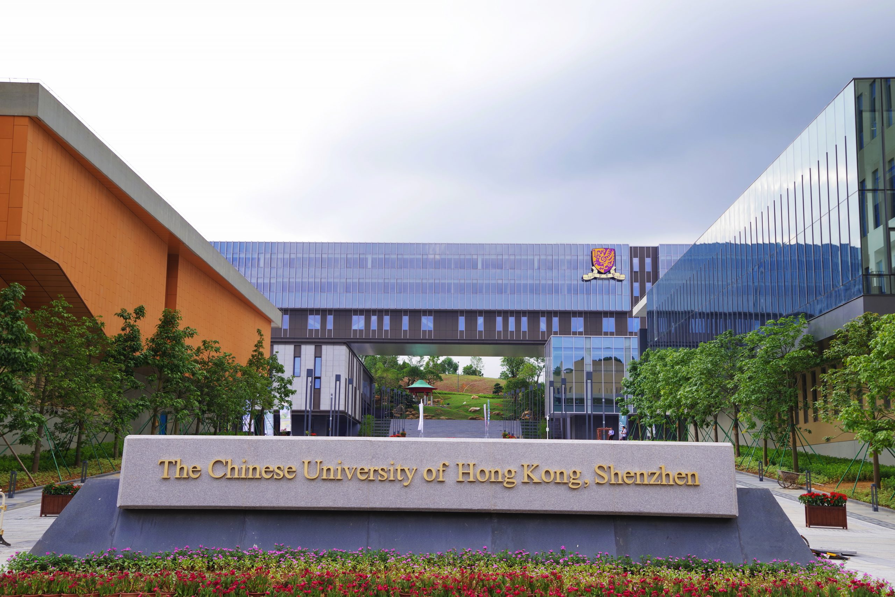

1. AI for Mathematical Reasoning
- Leading models and the global AI landscape.
- Mathematical reasoning agents and harnesses.
- Training, evaluation, limitations, and challenges for mathematicians and AI developers.
A proposed one-day conference on AI for mathematical reasoning, proof, and discovery at CUHK-Shenzhen.
Date, program, and participation arrangements are provisional.

Industrial AI research, reasoning systems, and Lean
Harnesses, mathematical discovery, and opportunities in physics
Individual and collective mathematical research